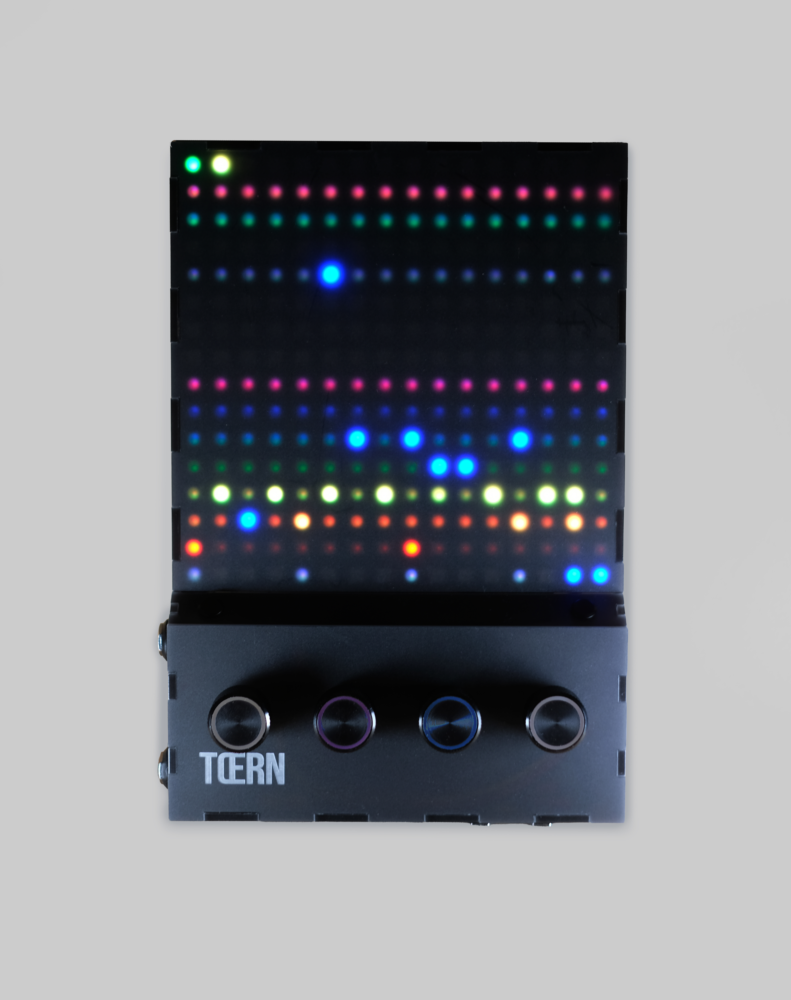

Every port, button, and jack on a TŒRN unit — what it does, when you use it, and what to watch out for.
Top-down overview
The face of TŒRN is dominated by the 16×16 RGB matrix. Four RGB-lit rotary encoders are evenly spaced across the width of the front strip below the matrix. Touch 1 (left) and touch 2 (right) are circular capacitive pads in the narrow band between the matrix and the encoders; touch 3 is another circular pad on the right bottom edge. Line out, USB-C, and headphone (A–C) and MIDI in, MIDI out, and power (D–F) sit on the lower left and right edges below the matrix — the diagram places those callouts just outside the chassis. Audio and recording jacks (G–J) run along the bottom edge; touch 3 (K) sits at the right end of that edge. The unit runs from an internal LiPo cell; charging happens over USB C.

The unit, photographed from above. Letters A–F mark the lower left and right edges in the schematic; G–J mark the bottom edge; K (touch 3) is on the right bottom edge.
A
Line out — 6.35 mm stereo on the lower left edge (below the matrix). Send to a mixer or interface. Independent level under VOL → LOUT.
B
USB-C — lower left edge. Charges the internal LiPo and provides host data for firmware updates via the Teensy boot path.
C
Headphone out — 6.35 mm (¼″) stereo TRS on the lower left edge. Use any phones or in-ears; level under VOL → MAIN.
D
MIDI in (TRS) — lower right edge, Type-A TRS. Standard MIDI from another device. See Tempo & MIDI.
E
MIDI out (TRS) — lower right edge, Type-A TRS. Clock + notes; pick what to emit under MIDI → SEND.
F
Power switch — physical slide on the lower right edge. Boots when slid on; the current pattern is autosaved before shutdown.
G
Internal mic — capsule on the bottom edge for hands-free sampling. Pick it as the active source under REC → INPT.
H
Micro SD slot — bottom edge, up to 64 GB. All samples, kits, patterns, songs and palettes live here. Push to seat, push again to eject.
I
Mic in (6.35 mm) — external microphone jack on the bottom edge, between the SD slot and the line-in. Sits next to the line-in so you can keep a vocal mic and a synth cable plugged in at the same time. Gain under REC → MIC.
J
Line in — 6.35 mm stereo on the bottom edge. Sample synths, drum machines or modular gear. Trim under REC → L-IN.
K
Touch 3 — third capacitive pad on the right bottom edge, used for chord gestures and a few menu-specific actions. See Controls → Touch pads.
SD card: only insert/eject with the unit off. The firmware re-indexes the card on boot. TŒRN does not mount the card as USB mass storage — prepare the initial layout with a card reader, or transfer files while the card stays in the unit via ETC → SD and sdtool.tyng.app (see Samples → SD card setup).
Controls at a glance
Three input families are wired to the firmware:
Four RGB-lit rotary encoders (1–4, left to right) on the front edge — each one turns, short-presses, and long-presses. Their function changes per screen. Row 1 of the matrix paints additional small hints just above the encoders.
Three touch-sensitive pads — circular capacitive buttons: touch 1 (left) and touch 2 (right) in the strip between the matrix and the encoders, plus touch 3 on the right bottom edge. They handle back/exit, tap tempo, filter / sample-browser entry, and chord gestures. See Controls → Touch pads.
Right-side power switch — physical on/off.
There are no menu buttons or screens beyond the matrix itself. Everything the firmware needs to communicate appears as lit pixels in known regions of the 16×16 area, explained in The matrix.
Internals
Microcontroller: Teensy 4.1 plus the Teensy Audio Shield.
Memory: 16 MB PSRAM (used for sample voices and the preview buffer) + up to 64 GB Micro SD.
Battery: internal LiPo. Estimated percentage shown under ETC → BATT — accurate enough for "is this enough for the set?" decisions.
Speaker: small internal driver; switchable under VOL → SPKR.
Internal mic + Mic-in jack: a built-in capsule for hands-free sampling, plus a dedicated 6.35 mm Mic-in jack on the bottom edge for an external microphone. Pick which one is active under REC → INPT; gain lives under REC → MIC.
Expansion header J11 (I2SC_3V): onboard JST PH 1×05. Among other signals, the middle/right pins expose Teensy pin 31 and GND for a handmade analog clock / trigger cable (see MIDI → PPQN).
Colour scheme
Bright pixels follow the main voice colours below; idle / off pixels use a dim "base" tint of the same hue so empty rows stay readable but quiet. You can switch to alternate palettes (or a custom one from the card) under ETC → COLR.